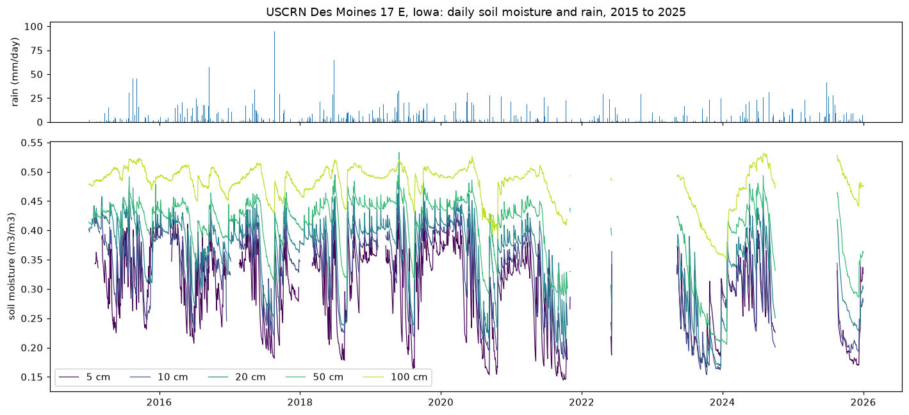
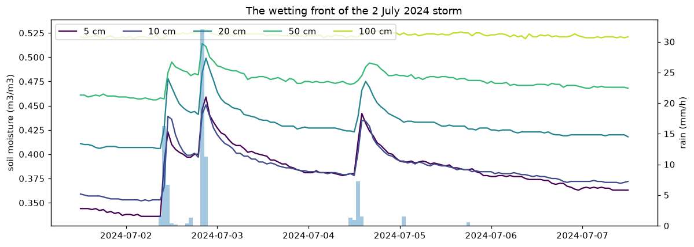
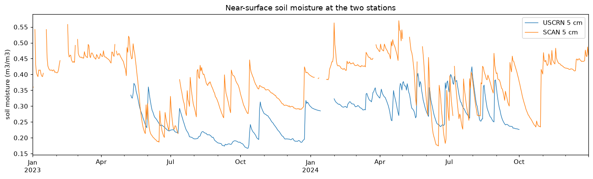
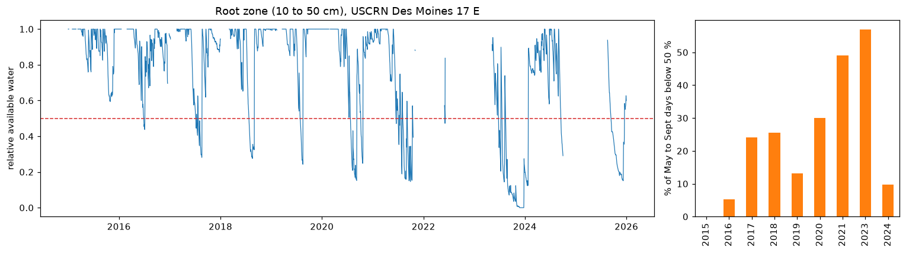

Soil moisture is a small store of water, a few percent of the fresh water on land, but it controls how rain is split between runoff and infiltration, how the sun’s energy is split between evaporation and heating the air, and how much water a crop can draw on between rains. This first notebook of the chapter sets out the quantities the rest of the chapter measures from space, using two public in situ stations in central Iowa: ten years of hourly readings at five depths from the US Climate Reference Network (USCRN) and daily readings from the Soil Climate Analysis Network (SCAN). It then estimates the water holding limits of the soils below the stations from SoilGrids texture with the Saxton and Rawls (2006) pedotransfer functions, and uses them to show when the root zone ran short of water.
Overview
Ways to express soil water
Quantity
Definition
Units
Gravimetric water content w
mass of water / mass of dry soil
g g-1
Volumetric water content theta
volume of water / volume of soil, theta = w rho_b / rho_w
m3 m-3
Porosity phi
pore volume / soil volume, 1 - rho_b / rho_s
m3 m-3
Degree of saturation s
theta / phi, 0 (dry) to 1 (saturated)
1 or %
Field capacity FC
water held after free drainage, about -33 kPa
m3 m-3
Wilting point WP
water held so tightly that plants cannot extract it, -1500 kPa
m3 m-3
Plant available water PAW
FC - WP
m3 m-3
Satellites and most sensors report volumetric water content. Some products (ASCAT, the ESA CCI ACTIVE record) report the degree of saturation instead, which needs porosity to convert; crop models think in available water between wilting point and field capacity.
Surface and root zone
Microwave sensors see the top few centimetres (about 5 cm at L-band, 1 to 2 cm at C- and X-band), while crops draw water from the top metre. The surface layer reacts to every shower and dries within days; deeper layers respond to the sum of many events. Chapter notebooks 05 and 24 come back to this gap between what is sensed and what matters to plants.
Why it matters
Water cycle: wet soils produce more runoff from the same rain; dry soils store it.
Energy cycle: evaporation from moist soil cools the surface; dry soil heats the air and can intensify heat waves (land-atmosphere coupling).
Carbon cycle: photosynthesis and soil respiration both slow down when water runs short.
Hazards and agriculture: drought, flood potential, landslides, fire danger and crop yield all depend on the water stored in the soil.
Measuring soil moisture in situ
Method
Principle
Footprint
Gravimetric sampling
weigh, oven dry at 105 C, weigh again
a core of a few cm, destructive
Time domain reflectometry (TDR)
travel time of a pulse along rods gives the apparent permittivity; the Topp et al. (1980) equation converts it to theta
about 10 cm around the rods
Capacitance and impedance probes
permittivity from the frequency or impedance of a circuit (USCRN and SCAN use Stevens HydraProbes)
a few cm
Cosmic-ray neutron sensing (COSMOS)
fast neutrons from cosmic rays are slowed by hydrogen in soil water
about 150 m radius, 10 to 50 cm deep
GNSS reflectometry
change of reflected GPS signal with soil permittivity
tens of metres
Point sensors measure a few cubic centimetres; a satellite pixel averages kilometres. This scale gap is the main difficulty of validation (notebooks 21 to 23).
Convert between gravimetric, volumetric and relative measures of soil water.
Read and plot multi-depth in situ soil moisture and see how a storm’s wetting front moves down.
Compare two sensor networks and recognize sensor artefacts.
Estimate wilting point, field capacity and porosity from texture with pedotransfer functions.
Track plant available water in the root zone through ten seasons.
Data
Dataset
Content
USCRN Des Moines 17 E (IA_Des_Moines_17_E), 2015 to 2025
hourly soil moisture at 5, 10, 20, 50 and 100 cm, soil temperature, precipitation
SCAN 2031 Ames, 2015 to 2025
daily soil moisture at 5, 10, 20, 51 and 102 cm (2 to 40 inch sensors)
SoilGrids 2.0 at both stations
sand, silt, clay, organic carbon and bulk density at six depths
Contents
Setup
Ten years of soil moisture at five depths
How a storm wets the profile
Two stations, two networks
Soil texture from SoilGrids
Water holding limits from texture
Plant available water in the root zone
Unit conversions and the Topp equation
Summary and exercises
Setup
Code
import warnings # warning controlwarnings.filterwarnings("ignore") # hide routine library warningsfrom pathlib import Path # file pathsimport matplotlib.pyplot as plt # figuresimport numpy as np # arraysimport pandas as pd # tablesimport rioxarray # noqa: F401 (registers the .rio accessor)import xarray as xr # labelled rastersimport geolattice # GeoLatticeimport geolattice.rsense.soil_moisture as sm # soil moisture physics, products, retrieval and validationimport sm_data as sd # chapter helper: subsets, downloads and caches the dataplt.rcParams.update({"figure.dpi": 110}) # figure resolutionOUT = Path("outputs") # results written by this chapterOUT.mkdir(exist_ok=True) # create it if neededprint("GeoLattice", geolattice.__version__, "| data folder", sd.DATA.relative_to(sd.DATA.parents[3])) # versions and pathsuscrn = sd.uscrn() # hourly USCRN record (UTC)scan = sd.scan() # daily SCAN recordprof = {st: sd.soilgrids_profile(st) for st in sd.STATIONS.index} # SoilGrids profiles under both stationsDEPTHS = [5, 10, 20, 50, 100] # USCRN sensor depths (cm)print(f"USCRN: {len(uscrn):,} hours from {uscrn.index.min():%Y-%m-%d} to {uscrn.index.max():%Y-%m-%d}; "f"SCAN: {len(scan):,} days") # record lengthsdisplay(sd.STATIONS) # station locations
GeoLattice 0.3.49 | data folder GeoLattice/Data/08_remote_sensing/08_13_soil_moisture
USCRN: 96,432 hours from 2015-01-01 to 2025-12-31; SCAN: 4,018 days
network
id
lon
lat
station
USCRN Des Moines 17 E
USCRN
IA_Des_Moines_17_E
-93.28610
41.5564
SCAN Ames
SCAN
2031:IA:SCAN
-93.72977
42.0136
Ten years of soil moisture at five depths
The USCRN sensors report the mean of each hour. Daily means are enough to see the seasons; the missing winter values are frozen soil, when the probes do not measure liquid water.
Code
daily = uscrn.resample("1D").mean() # daily means of the hourly valuesdaily["p_mm"] = uscrn["p_mm"].resample("1D").sum(min_count=1) # daily precipitation totalfig, ax = plt.subplots(2, 1, figsize=(13, 6), sharex=True, gridspec_kw={"height_ratios": [1, 2.5]}) # rain and soilax[0].bar(daily.index, daily.p_mm, width=1, color="tab:blue"); ax[0].set_ylabel("rain (mm/day)") # precipitationfor d, c inzip(DEPTHS, plt.cm.viridis(np.linspace(0, 0.9, 5))): # one line per depth ax[1].plot(daily.index, daily[f"sm_{d}"], color=c, lw=0.8, label=f"{d} cm") # daily soil moistureax[1].set_ylabel("soil moisture (m3/m3)"); ax[1].legend(ncol=5, loc="lower left") # labelsax[0].set_title("USCRN Des Moines 17 E, Iowa: daily soil moisture and rain, 2015 to 2025"); plt.tight_layout(); plt.show() # drawstats = pd.DataFrame({f"{d} cm": daily[f"sm_{d}"].describe(percentiles=[0.02, 0.5, 0.98]) for d in DEPTHS}).T # distribution per depthdisplay(stats[["count", "mean", "std", "2%", "50%", "98%"]].round(3)) # summary table

count
mean
std
2%
50%
98%
5 cm
2817.0
0.296
0.069
0.162
0.306
0.406
10 cm
2902.0
0.321
0.069
0.173
0.338
0.418
20 cm
3133.0
0.360
0.067
0.184
0.384
0.443
50 cm
3139.0
0.404
0.059
0.221
0.426
0.469
100 cm
3139.0
0.479
0.034
0.371
0.489
0.521
The surface layers swing widely and quickly, between about 0.16 and 0.41 m3 m-3 (2nd and 98th percentiles at 5 cm), while the 100 cm sensor stays near 0.48 to 0.52 and only drops in the dry late summers of 2020, 2021 and 2023. Mean soil moisture rises with depth (0.30 at 5 cm, 0.48 at 100 cm) in this silty clay loam and the standard deviation halves: the deep sensors integrate many rain events. Winters are missing (frozen soil), and the record has a long outage from late 2021 to spring 2023, a reminder that in situ series have gaps too.
How a storm wets the profile
The wettest day of 2024 at the station was 2 July. The hourly record shows how the water entered the profile.
Code
t0 = pd.Timestamp("2024-07-01 12:00") # before the storm (UTC)win = uscrn.loc[t0:t0 + pd.Timedelta(days=6)] # six days of hourly datarain_start = win.index[win.p_mm >0.5][0] # first hour with rainrows = [] # response of each depthfor d in DEPTHS: # each sensor s = win[f"sm_{d}"] # hourly series before =float(s.loc[:rain_start].iloc[-3:].mean()) # value just before the rain peak_t = s.idxmax() # time of the maximum rows.append({"depth_cm": d, "before": before, "peak": float(s.max()), "rise": float(s.max()) - before,"hours_to_peak": (peak_t - rain_start).total_seconds() /3600}) # rise and delayresp = pd.DataFrame(rows).set_index("depth_cm") # one row per depthdisplay(resp.round(3)) # response tablefig, ax = plt.subplots(figsize=(11, 4)) # hourly plotfor d, c inzip(DEPTHS, plt.cm.viridis(np.linspace(0, 0.9, 5))): # one line per depth ax.plot(win.index, win[f"sm_{d}"], color=c, label=f"{d} cm") # hourly soil moistureax2 = ax.twinx(); ax2.bar(win.index, win.p_mm, width=1/24, color="tab:blue", alpha=0.4); ax2.set_ylabel("rain (mm/h)") # rainax.set_ylabel("soil moisture (m3/m3)"); ax.legend(ncol=5, loc="upper left") # labelsprint(f"rain from {rain_start:%Y-%m-%d %H:%M} UTC: {win.p_mm.sum():.0f} mm in the window") # storm totalax.set_title("The wetting front of the 2 July 2024 storm"); plt.tight_layout(); plt.show() # draw
before
peak
rise
hours_to_peak
depth_cm
5
0.336
0.459
0.123
12.0
10
0.353
0.451
0.098
12.0
20
0.406
0.499
0.093
12.0
50
0.457
0.514
0.057
11.0
100
0.520
0.529
0.009
12.0
rain from 2024-07-02 09:00 UTC: 83 mm in the window

About 83 mm fell in two bursts on 2 July and a third on 4 July. Every sensor down to 50 cm rose within the same hour as the rain and peaked about 12 hours after it started, so the water did not move down as a slow front: in this clay-rich soil it bypassed the matrix through cracks and root channels (preferential flow). The size of the rise, however, shrinks with depth, from 0.12 m3 m-3 at 5 cm to 0.06 at 50 cm and almost nothing at 100 cm, which was already near saturation. Between storms the surface layers dry fastest. A satellite sees only the top of this column, which is why its retrievals look much more variable than what a crop experiences.
Two stations, two networks
SCAN Ames lies about 60 km north-west of the USCRN station. Both use HydraProbe sensors but different installations and calibrations.
Code
both = pd.DataFrame({"USCRN 5 cm": daily["sm_5"], "SCAN 5 cm": scan["sm_5"],"USCRN 50 cm": daily["sm_50"], "SCAN 51 cm": scan["sm_51"]}).loc["2015":"2025"] # daily seriesfig, ax = plt.subplots(figsize=(13, 4)) # time seriesboth.loc["2023":"2024", ["USCRN 5 cm", "SCAN 5 cm"]].plot(ax=ax, lw=0.9) # two recent yearsax.set_ylabel("soil moisture (m3/m3)"); ax.set_title("Near-surface soil moisture at the two stations"); plt.tight_layout(); plt.show() # drawprint("correlation of daily values:") # agreementprint(both.corr().round(2).loc[["USCRN 5 cm", "USCRN 50 cm"], ["SCAN 5 cm", "SCAN 51 cm"]]) # cross-correlationshigh = (scan["sm_5"] >0.55).sum() # days above any plausible porosityprint(f"SCAN 5 cm days above 0.55 m3/m3: {high} of {scan['sm_5'].notnull().sum()}") # sensor artefacts

correlation of daily values:
SCAN 5 cm SCAN 51 cm
USCRN 5 cm 0.43 0.34
USCRN 50 cm 0.15 0.39
SCAN 5 cm days above 0.55 m3/m3: 11 of 3909
The two series share the seasonal drying and the largest storms, but their daily correlation is only 0.43 at 5 cm and 0.39 at 50 cm: rain falls differently 60 km apart, the soils differ, and so do the installations. On 11 days the SCAN 5 cm sensor reports more than 0.55 m3 m-3, above any plausible porosity of a loam; these are sensor artefacts (for example water ponding around the probe), and validation in notebook 21 screens such values out. Two stations in one region are not interchangeable at the daily scale, which is the first hint of the point-to-pixel problem.
Soil texture from SoilGrids
SoilGrids 2.0 (Poggio et al. 2021) predicts soil properties at 250 m from soil profiles and covariates with machine learning. sd.soilgrids_profile reads its six standard depths under each station through sm.load_soilgrids, which fetches only a small window of the global mosaics.
Code
for st, p in prof.items(): # each stationprint(st) # header display(p.round(3)) # sand, silt, clay as fractions, soc in g/kg, bdod in g/cm3
USCRN Des Moines 17 E
sand
silt
clay
soc
bdod
depth
0-5cm
0.153
0.514
0.333
30.6
1.38
5-15cm
0.152
0.512
0.336
18.8
1.55
15-30cm
0.144
0.487
0.370
12.1
1.56
30-60cm
0.140
0.497
0.363
6.0
1.61
60-100cm
0.148
0.482
0.371
3.5
1.68
100-200cm
0.165
0.490
0.344
2.3
1.70
SCAN Ames
sand
silt
clay
soc
bdod
depth
0-5cm
0.256
0.446
0.298
19.1
1.49
5-15cm
0.254
0.442
0.304
31.6
1.61
15-30cm
0.263
0.448
0.289
18.9
1.62
30-60cm
0.279
0.437
0.284
9.9
1.66
60-100cm
0.312
0.432
0.256
3.0
1.72
100-200cm
0.463
0.359
0.179
0.8
1.72
Under the USCRN station SoilGrids predicts a silty clay loam with 33 to 37 % clay and about 50 % silt at every depth; under SCAN Ames a clay loam with about 30 % clay near the surface that becomes loamier and sandier below a metre (glacial till). Organic carbon is highest in the top 30 cm.
Water holding limits from texture
Saxton and Rawls (2006) fitted regressions of the water held at -33 and -1500 kPa on sand, clay and organic matter, using about 2,000 US soil samples. sm.saxton_rawls returns wilting point, field capacity, saturation (porosity), plant available water, normal bulk density and saturated hydraulic conductivity. Organic matter is about 1.72 times organic carbon.
Code
ptf = {} # pedotransfer results per stationfor st, p in prof.items(): # each station om =0.1724* p["soc"] # organic matter (%) from organic carbon (g/kg): OM = 1.724 SOC r = sm.saxton_rawls(p["sand"].values, p["clay"].values, organic_matter=om.values) # pedotransfer functions ptf[st] = pd.DataFrame({k: np.asarray(v) for k, v in r.items()}, index=p.index) # one row per depthprint(st); display(ptf[st].round(3)) # tableobs = pd.DataFrame({"2%": [daily[f"sm_{d}"].quantile(0.02) for d in DEPTHS],"98%": [daily[f"sm_{d}"].quantile(0.98) for d in DEPTHS]}, index=[f"{d} cm"for d in DEPTHS]) # observed range at USCRNprint("USCRN observed range, 2015 to 2025:"); display(obs.round(3)) # compare with WP and saturation
USCRN Des Moines 17 E
wilting_point
field_capacity
saturation
plant_available_water
bulk_density
lambda_
ksat
depth
0-5cm
0.215
0.383
0.560
0.168
1.167
0.070
12.022
5-15cm
0.211
0.375
0.516
0.164
1.281
0.069
6.320
15-30cm
0.225
0.381
0.498
0.156
1.330
0.063
3.538
30-60cm
0.219
0.376
0.478
0.157
1.383
0.065
2.357
60-100cm
0.223
0.377
0.471
0.154
1.402
0.063
1.859
100-200cm
0.207
0.363
0.457
0.156
1.438
0.067
1.873
SCAN Ames
wilting_point
field_capacity
saturation
plant_available_water
bulk_density
lambda_
ksat
depth
0-5cm
0.192
0.349
0.499
0.157
1.329
0.071
7.347
5-15cm
0.204
0.366
0.546
0.162
1.204
0.070
12.657
15-30cm
0.188
0.345
0.497
0.157
1.334
0.073
7.714
30-60cm
0.179
0.329
0.459
0.151
1.434
0.073
4.865
60-100cm
0.158
0.302
0.423
0.144
1.528
0.076
4.036
100-200cm
0.109
0.230
0.392
0.120
1.612
0.084
9.577
USCRN observed range, 2015 to 2025:
2%
98%
5 cm
0.162
0.406
10 cm
0.173
0.418
20 cm
0.184
0.443
50 cm
0.221
0.469
100 cm
0.371
0.521
The comparison is instructive. Under the USCRN station the functions give a wilting point of about 0.21 to 0.22 and a field capacity of about 0.38 m3 m-3, but the driest 2 % of days at 5 to 20 cm (0.16 to 0.18) fall below that wilting point: near the surface, evaporation dries the soil beyond the -1500 kPa that plants can reach, and sensor calibration in clay soils adds an offset. The wettest days stay below the estimated saturation (0.47 to 0.56) in the upper profile, while at 100 cm the sensor reads 0.52, above the estimated 0.46. Pedotransfer functions are regressions over many soils and give the right magnitude, not the exact limits of one profile; measured retention curves would be needed for that.
Plant available water in the root zone
The relative available water (theta - WP) / (FC - WP) is 1 at field capacity and 0 at wilting point. Crops start to close their stomata below about 50 %. Here it is computed for the 10 to 50 cm layer at the USCRN station with the pedotransfer limits of the corresponding SoilGrids depths.
Code
lim = ptf["USCRN Des Moines 17 E"] # limits under the USCRN stationlayer = {10: "5-15cm", 20: "15-30cm", 50: "30-60cm"} # sensor depth -> SoilGrids layerraw =sum(sm.soil_water_status(daily[f"sm_{d}"], lim.loc[g, "wilting_point"], lim.loc[g, "field_capacity"])for d, g in layer.items()) /3# mean relative available water of the three sensorsraw = pd.Series(np.asarray(raw), index=daily.index) # daily seriesseason = raw[(raw.index.month >=5) & (raw.index.month <=9)].dropna() # May to September days with datan_days = season.groupby(season.index.year).size() # observed days per seasondry = season.lt(0.5).groupby(season.index.year).mean() *100# share of observed days below 50 %dry = dry[n_days >=100] # keep seasons with at least 100 of 153 days observedfig, ax = plt.subplots(1, 2, figsize=(14, 4), gridspec_kw={"width_ratios": [3, 1]}) # series and barsax[0].plot(raw.index, raw, lw=0.8); ax[0].axhline(0.5, color="tab:red", ls="--", lw=1) # 50 % lineax[0].set_ylabel("relative available water"); ax[0].set_title("Root zone (10 to 50 cm), USCRN Des Moines 17 E") # labelsdry.plot.bar(ax=ax[1], color="tab:orange"); ax[1].set_ylabel("% of May to Sept days below 50 %") # yearly barsax[1].set_xlabel(""); plt.tight_layout(); plt.show() # drawprint(dry.round(0).astype(int).to_dict(), "| seasons left out (too few days):", sorted(set(n_days.index) -set(dry.index))) # values

{2015: 0, 2016: 5, 2017: 24, 2018: 25, 2019: 13, 2020: 30, 2021: 49, 2023: 57, 2024: 10} | seasons left out (too few days): [2022, 2025]
The years differ sharply: in 2023 the root zone spent 57 % of the observed growing season days below 50 % of available water, in 2021 49 %, while 2015 and 2016 hardly dropped below it. Seasons with large gaps (the 2022 outage) are left out because a share of a few observed days would be misleading. The chapter’s drought notebook (25) maps these dry seasons across the region from SMAP.
Unit conversions and the Topp equation
A gravimetric sample, a degree of saturation from a scatterometer and a TDR reading all describe the same soil water. The Topp et al. (1980) cubic relates the apparent permittivity measured by TDR to volumetric water content for most mineral soils.
Code
rho_b =float(prof["SCAN Ames"].loc["0-5cm", "bdod"]) # SoilGrids bulk density at the surface (g/cm3)w =0.20# a gravimetric sample (g/g)theta =float(sm.volumetric_from_gravimetric(w, rho_b)) # volumetric water contentphi =float(sm.porosity_from_bulk_density(rho_b)) # porosity from bulk densityprint(f"bulk density {rho_b:.2f} g/cm3: w = {w} g/g -> theta = {theta:.3f} m3/m3; "f"porosity {phi:.3f}; degree of saturation {float(sm.degree_of_saturation(theta, phi)):.2f}") # conversionsprint(f"an ASCAT-style 62 % saturation is {float(sm.saturation_to_volumetric(62.0, phi)):.3f} m3/m3") # saturation to volumetriceps = sm.topp_inverse(np.array([0.05, 0.15, 0.25, 0.35, 0.45])) # permittivity of each water contentdisplay(pd.DataFrame({"theta": [0.05, 0.15, 0.25, 0.35, 0.45], "apparent permittivity": eps,"back with topp": sm.topp(eps)}).round(3)) # round trip
bulk density 1.49 g/cm3: w = 0.2 g/g -> theta = 0.298 m3/m3; porosity 0.440; degree of saturation 0.68
an ASCAT-style 62 % saturation is 0.273 m3/m3
theta
apparent permittivity
back with topp
0
0.05
3.790
0.05
1
0.15
8.113
0.15
2
0.25
13.408
0.25
3
0.35
20.375
0.35
4
0.45
30.767
0.45
Water dominates permittivity: about 80 for liquid water against 3 to 5 for dry soil minerals. The apparent permittivity of soil therefore rises from about 4 to 31 as soil moisture goes from 0.05 to 0.45 m3 m-3. This contrast is what microwave remote sensing exploits, and it is the subject of the next notebook.
Summary and exercises
Volumetric water content is the common currency; degree of saturation and relative available water need porosity, field capacity and wilting point, which texture can estimate.
At the Iowa station near-surface soil moisture swings between about 0.16 and 0.41 m3 m-3, while the 100 cm layer stays near 0.48 to 0.52; in situ records have gaps too.
The 83 mm storm of 2 July 2024 reached 50 cm within the hour through preferential flow, but the rise shrank from 0.12 m3 m-3 at 5 cm to almost nothing at 100 cm.
Two stations 60 km apart correlate only at about 0.4 day to day, and one reports values above porosity that need screening.
SoilGrids texture with the Saxton and Rawls functions gives limits of the right magnitude, but the near-surface soil dries below the estimated wilting point and the subsoil is wetter than estimated.
The share of growing season days below 50 % of available water separates drought seasons (2021,
from wet ones.
Exercises
Repeat the storm analysis for the 20 May 2024 event. Is the response faster or slower than in July, and why might the antecedent moisture matter?
Compute the relative available water at SCAN Ames with its own SoilGrids profile. Which station had more stress days in 2023?
Change the organic matter in sm.saxton_rawls from the SoilGrids value to 1 % and to 4 %. How much do field capacity and plant available water change?
Use sm.degree_of_saturation with the pedotransfer saturation to express the USCRN 5 cm record as degree of saturation. What fraction of days is above 0.9?